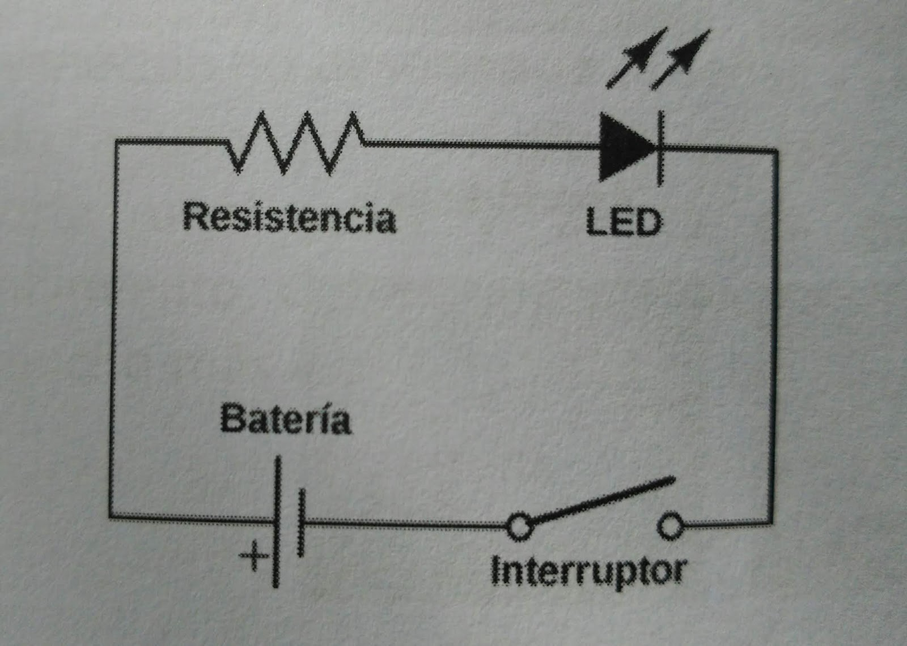
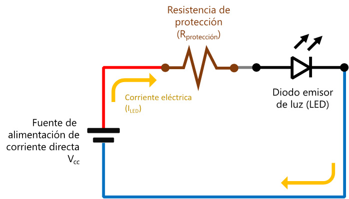
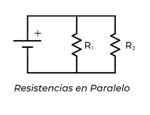

2 Introducción a la Electrónica
2.1 Conceptos básicos: Corriente, Voltaje, Resistencia.
Corriente
La corriente eléctrica es uno de los conceptos fundamentales en la electrónica y la física. La corriente eléctrica se refiere al movimiento de cargas eléctricas a través de un conductor, como un alambre. Esencialmente, es el flujo de electrones.
Tipos de corriente
Corriente Continua (CC o DC, por sus siglas en inglés "Direct Current"): En este tipo de corriente, los electrones fluyen constantemente en una sola dirección. Las baterías producen corriente continua.
Corriente Alterna (CA o AC, por sus siglas en inglés "Alternating Current"): En la corriente alterna, los electrones cambian de dirección de flujo periódicamente. La electricidad que proviene de las tomas de pared en nuestros hogares es corriente alterna. La corriente alterna es preferida para la transmisión de energía en largas distancias, como en redes eléctricas, debido a sus propiedades y la facilidad con la que puede ser transformada en diferentes voltajes utilizando transformadores.
En resumen, la corriente eléctrica es esencial para la mayoría de las tecnologías modernas, desde la iluminación y la calefacción hasta la comunicación y la computación. Entender cómo se genera, se controla y se utiliza es clave en campos como la ingeniería eléctrica y la electrónica.
Ejemplos practicos de corriente
Baterías de un Control Remoto
Cuando presionas un botón en un control remoto de televisión, las baterías en su interior proporcionan corriente continua (CC) para alimentar el circuito interno. Este circuito, a su vez, envía una señal infrarroja al televisor para ejecutar una acción, como cambiar el canal o ajustar el volumen.
Carga de un Teléfono Móvil
Al conectar tu teléfono móvil a un cargador, el cargador convierte la corriente alterna (CA) de la toma de pared a corriente continua (CC), adecuada para cargar la batería del teléfono. La corriente fluye desde el cargador hacia la batería del teléfono, cargándola.
Tostadora Eléctrica
Al enchufar una tostadora y encenderla, permite que la corriente alterna (CA) del hogar fluya a través de sus resistencias internas. Debido al efecto Joule, esta corriente produce calor, el cual es utilizado para tostar el pan.
Ejemplos código de corriente
Control Remoto con Microcontrolador
Imagina que tienes un control remoto basado en un microcontrolador como Arduino. Este control remoto tiene botones para aumentar y disminuir el volumen de un dispositivo, y cuando se presiona un botón, el microcontrolador envía una señal correspondiente. Aquí hay un ejemplo simplificado de código en el lenguaje de programación Arduino (basado en C++)
Voltaje (o Tensión Eléctrica)
El voltaje, también conocido como diferencia de potencial o tensión eléctrica, es la "fuerza" que impulsa a los electrones a moverse en un circuito eléctrico. Puedes pensar en ello como la "presión" en un sistema hidráulico. Así como el agua se mueve de áreas de alta presión a áreas de baja presión, los electrones, en un circuito eléctrico, tienden a moverse de áreas de alto potencial a áreas de bajo potencial.
Unidades
El voltaje se mide en voltios, que se representa con la letra "V".
Medición
El voltaje se mide usando un instrumento llamado voltímetro. Para medir la diferencia de potencial (voltaje) entre dos puntos de un circuito, se coloca el voltímetro en paralelo entre esos dos puntos.
Fuentes de Voltaje
Existen diferentes dispositivos que pueden generar una diferencia de potencial. Las baterías, por ejemplo, crean una diferencia de potencial entre sus terminales, lo que impulsa la corriente a fluir en un circuito. Otros ejemplos incluyen generadores, células solares y fuentes de alimentación eléctrica.
Tipos de Voltaje
Voltaje Continuo (DC o Direct Current): Es un voltaje que no cambia con el tiempo,
como el proporcionado por una batería.
Voltaje Alterno (AC o Alternating Current): Es un voltaje que varía periódicamente
en magnitud y dirección, como el suministrado por las tomas eléctricas en hogares y empresas.
Relación con otros componentes
En un resistor (usando la Ley de Ohm): V=I x R donde V es el voltaje, I es la corriente y R es la resistencia.
En un capacitor: La relación entre la carga (Q) almacenada en el capacitor y el voltaje (V) es Q = C X V donde C es la capacitancia del capacitor.
En un inductor: La relación entre la corriente que fluye a través del inductor y el voltaje a través del tiempo es V = L x dI/dT donde L es la inductancia y dI/dT es la tasa de cambio de la corriente con respecto al tiempo.
Ejemplos practicos de voltaje
Pilas y Baterías
Una pila AA típica tiene un voltaje nominal de 1.5V. Cuando la conectas a un dispositivo, como una linterna,
proporciona una diferencia de potencial de 1.5V que impulsa a los electrones a moverse a través del circuito
de la linterna, encendiendo el LED o la bombilla.
Las baterías recargables de litio-ion que se encuentran en los teléfonos móviles suelen tener un voltaje
nominal de 3.7V.
Tomas de Corriente en Hogares
En muchos países, las tomas de corriente domésticas suministran una corriente alterna (AC) con un voltaje nominal de 110V o 220V, dependiendo de la región. Estas tomas se utilizan para alimentar la mayoría de los electrodomésticos y dispositivos electrónicos en el hogar.
Automóviles
La batería estándar de un automóvil tiene un voltaje de 12V. Esta batería es la que arranca el motor y alimenta accesorios como las luces y la radio cuando el motor está apagado.
Ejemplos código de voltaje
En términos de programación, no se maneja directamente el voltaje como se hace con componentes electrónicos. Sin embargo, en muchos sistemas embebidos y microcontroladores, es común leer o monitorear voltajes usando convertidores analógico-digitales (ADC) o establecer un voltaje en un pin utilizando modulación por ancho de pulso (PWM). A continuación, te proporciono algunos ejemplos de código relacionados con el voltaje:
Lectura de Voltaje usando un ADC en Arduino
Supongamos que quieres leer el voltaje en un pin analógico (A0) de un Arduino:
Establecer un "voltaje" usando PWM en Arduino
Supongamos que quieres establecer un voltaje de 2.5V (aproximadamente) en un pin digital (D3) de un Arduino usando PWM
Estos ejemplos muestran cómo puedes interactuar con voltajes desde el código, ya sea leyendo un valor de voltaje o estableciendo un "voltaje" mediante PWM. Es importante tener en cuenta que el código solo proporciona una representación digital del voltaje, y el hardware (por ejemplo, el microcontrolador o el ADC) es el que realmente interactúa con el voltaje real.
Resistencia
La resistencia es una medida de cuánto se opone un objeto o sustancia al flujo de corriente eléctrica. En términos simples, puede pensarse en la resistencia como la "fricción eléctrica".
Unidades y Símbolo
La resistencia se mide en ohmios, representado por el símbolo Ω.
El símbolo esquemático estándar para una resistencia es una línea en zigzag.
Ley de Ohm
La Ley de Ohm establece que la corriente que fluye a través de un conductor entre dos puntos es directamente
proporcional al voltaje a través de los dos puntos e inversamente proporcional a la resistencia. Se formula
como:
I = V/R
Donde:
I = Corriente (amperios)
V = Voltaje (voltios)
R = Resistencia (ohmios)
Tipos de Resistencias
Resistencias fijas: Tienen un valor constante de resistencia que no cambia.
Resistencias variables: Permiten cambiar su valor de resistencia, como el
potenciómetro.
Resistencias dependientes: Su resistencia cambia basándose en algún parámetro
externo, como la temperatura (termistores) o la luz (fotoresistencias).
Resistencias en Circuitos
Serie: Cuando las resistencias se conectan en serie, la resistencia total
(equivalente) es simplemente la suma de las resistencias individuales.
Paralelo: Cuando las resistencias se conectan en paralelo, la inversa de la
resistencia total es igual a la suma de las inversas de cada resistencia individual.
Efecto Joule
Cuando la corriente fluye a través de una resistencia, parte de la energía eléctrica se convierte en calor
debido a la resistencia del material. Este efecto es descrito por la ecuación:
P = I^2 x R
Donde:
P = Potencia (en watts)
I = Corriente (amperios)
R = Resistencia (ohmios)
Esta propiedad se explota en dispositivos como calentadores y tostadoras, pero puede ser un efecto no
deseado en otros dispositivos, donde el exceso de calor puede dañar componentes.
Aplicaciones y Consideraciones
Las resistencias son esenciales en la electrónica para limitar la corriente, establecer sesgos de voltaje,
proteger componentes, entre otras cosas.
Al seleccionar una resistencia para una aplicación específica, es crucial considerar no solo su resistencia
(valor en ohmios), sino también su potencia nominal (por ejemplo, 1/4W, 1/2W) y
tolerancia (por ejemplo,
±5%).
2.2 Ley de Ohm
La Ley de Ohm, nombrada en honor a Georg Simon Ohm, un físico alemán que la formuló en 1827, es uno de los principios fundamentales en el campo de la electrónica y la electricidad. Esta ley establece una relación entre el voltaje (V), la corriente (I) y la resistencia (R) en un circuito eléctrico.
Expresión de la Ley
La Ley de Ohm puede expresarse con la sencilla ecuación:
V = I x R
Donde:
V es el voltaje o diferencia de potencial (medido en voltios).
I es la corriente eléctrica (medida en amperios o amperes).
R es la resistencia (medida en ohmios).
Implicaciones
1 Relación Lineal: La relación entre V e I es lineal para un resistor, lo que significa que si duplicas el voltaje aplicado a
través de una resistencia (y todo lo demás permanece constante), la corriente también se duplicará.
Resistencia Constante: En muchos materiales, especialmente en los metales, la
resistencia
R es aproximadamente constante sobre una amplia gama de voltajes y corrientes. Esto
significa que la relación V/I es constante para estos materiales.
Aplicaciones de la Ley de Ohm
Determinación de Componentes: Si se conoce el voltaje y la corriente en un circuito, se puede usar la Ley de Ohm para determinar la resistencia. Del mismo modo, conociendo cualquier dos de las tres variables (V, I, R), se puede calcular la tercera.
Diseño de Circuitos: La Ley de Ohm es esencial para diseñar circuitos. Por ejemplo, al conectar un LED a una fuente de alimentación, se puede usar una resistencia para limitar la corriente al LED a un valor seguro. Usando la Ley de Ohm, se puede determinar el valor adecuado de esa resistencia.
La Ley de Ohm es esencialmente una descripción de cómo se comportan los materiales conductores en respuesta a una diferencia de potencial aplicada. Es una de las primeras leyes que los estudiantes de electrónica y electricidad aprenden, y sigue siendo una herramienta valiosa en la caja de herramientas de cualquier ingeniero o técnico. Su simplicidad y universalidad en circuitos resistivos la hacen fundamental en la comprensión y diseño de sistemas eléctricos y electrónicos.
Ejemplos practicos de ley ohm
LED y Resistencia Limitadora
Imagina que tienes un LED que requiere una corriente de 20 mA (0.02 A) para funcionar correctamente y sabes
que su caída de voltaje es de 2V. Si quieres conectar este LED a una fuente de alimentación de 5V,
necesitarías una resistencia para limitar la corriente.
Usando la Ley de Ohm:
Diferencia de voltaje en la resistencia = Voltaje total - Caída de voltaje en el LED = 5V - 2V = 3V
R = V/I = 3V/0.02A = 150Ω
Necesitarías una resistencia de aproximadamente 150 ohmios para mantener la
corriente en el LED cerca de 20
mA.
Problema con una Tostadora
Supón que tienes una tostadora que, cuando está funcionando correctamente, consume una corriente de 8A desde
una toma de corriente de 120V. Un día, notas que no calienta como debería. Decides medir la corriente y
descubres que es solo de 4A.
Usando la Ley de Ohm:
Resistencia original = V/I = 120V/8A = 15Ω
Resistencia con el problema = V/I = 120V/4A = 30Ω
El aumento en resistencia podría indicar que parte del elemento calefactor de la tostadora se ha dañado o
roto, causando que la tostadora no funcione correctamente.
Determinando el Voltaje en un Circuito
Imagina que estás construyendo un circuito y usas una resistencia de 220 ohmios. Al medir la corriente que
fluye a través de la resistencia, encuentras que es de 50 mA (0.05 A). ¿Cuál es la diferencia de potencial o
voltaje a través de la resistencia?
Aplicando la Ley de Ohm:
V = I X R = 0.05A x 220Ω = 11V
Por lo tanto, la diferencia de potencial a través de la resistencia es de 11 voltios.
Estos ejemplos muestran cómo la Ley de Ohm se aplica en situaciones prácticas, ya sea para diseñar un circuito, diagnosticar problemas o simplemente entender el comportamiento de un dispositivo eléctrico.
Ejemplos código de la ley de Ohm
la Ley de Ohm se puede representar en código. La Ley de Ohm establece que el voltaje (V) a través de un resistor es igual al producto de la corriente (I) que fluye a través de él y su resistencia (R). Matemáticamente, esto se representa como: V = I X R
Donde:V es el voltaje (en voltios).
I es la corriente (en amperios).
R es la resistencia (en ohmios).
Lectura de Voltaje usando un ADC en Arduino
A continuación, te muestro una simple representación en código de la Ley de Ohm en C++:
2.3 Circuitos básicos y lectura de diagramas.
Introducción
Los circuitos eléctricos y electrónicos son combinaciones de componentes interconectados diseñados para realizar funciones específicas, como amplificar una señal, convertir energía, procesar datos o recibir y transmitir información. Entender cómo leer y analizar estos circuitos es esencial para cualquiera que busque trabajar o estudiar en campos relacionados con la electrónica.
Circuitos Básicos
Circuitos en Serie
En un circuito en serie, los componentes están conectados uno tras otro, lo que significa que la corriente
eléctrica tiene un solo camino para seguir.
La resistencia total (Rtotal) en un circuito en serie es la suma de las resistencias individuales: Rtotal = R1 +
R2 + ... + Rn
Todos los componentes en serie reciben el mismo valor de corriente.
Circuitos Paralelos
En un circuito paralelo, los componentes están conectados en ramas separadas, ofreciendo múltiples caminos para
la corriente eléctrica.
Para resistencias en paralelo, la inversa de la resistencia total es igual a la suma de las inversas de cada
resistencia individual.
Todos los componentes en paralelo tienen el mismo valor de voltaje.
Combinaciones
Los circuitos reales a menudo tienen componentes tanto en serie como en paralelo. El análisis de estos circuitos mixtos puede requerir combinar técnicas y leyes, como la Ley de Ohm o las Leyes de Kirchhoff.
Lectura de Diagramas
Símbolos Estándar
Los diagramas de circuitos utilizan símbolos estándar para representar diferentes componentes. Por ejemplo:
*Una línea en zigzag representa una resistencia.
*Dos líneas paralelas representan un capacitor.
*Una bobina representa un inductor.
*Otros símbolos comunes incluyen los de diodos, transistores, interruptores y fuentes de alimentación.
Conexiones y Nodos
Un punto donde dos líneas se encuentran en un diagrama indica una conexión.
Un nodo es un punto donde tres o más líneas se encuentran. En un análisis de circuito, un nodo a menudo
representa un punto de interés donde se pueden establecer relaciones de voltaje o corriente.
Referencia de Tierra
Muchos diagramas muestran un símbolo de tierra, que sirve como punto de referencia para las mediciones de voltaje.
Conclusión
La capacidad de interpretar y analizar diagramas de circuitos es un aspecto crucial de la electrónica. Permite a ingenieros, técnicos y entusiastas comprender, diseñar, modificar y reparar circuitos. Una comprensión sólida de los circuitos básicos, combinada con habilidades en la lectura de diagramas, proporciona una base sólida para aventurarse en proyectos más complejos y avanzados en el mundo de la electrónica.
Ejemplos practicos de circuitos basicos y lectura de diagramas
Circuito con una Resistencia y una Fuente de Alimentación
Descripción: Es el circuito más básico que uno puede encontrar. Compuesto simplemente por una fuente de alimentación (como una batería) y una resistencia.
Interpretación: La batería está representada por las líneas paralelas (| |), donde el lado más largo indica el polo positivo y el lado más corto indica el negativo. La resistencia (R) está representada por el símbolo en zigzag (//).
Circuito con un LED y una Resistencia
Descripción: Un circuito que utiliza una resistencia para limitar la corriente que fluye a través de un LED.
Interpretación: Después de la batería, la corriente pasa a través de la resistencia (R) y luego al LED. El LED está representado por el símbolo |>|, donde la flecha indica la dirección en la que se espera que fluya la corriente (y, por lo tanto, la dirección en la que se encenderá el LED).
Circuito con una Resistencia en Paralelo
Descripción:: Un circuito donde hay dos resistencias en paralelo, conectadas a una fuente de alimentación.
Interpretación: La batería alimenta el circuito, que se bifurca en dos caminos en paralelo, cada uno con una resistencia (R1 y R2). La corriente se divide entre los dos caminos.
Estos ejemplos prácticos ilustran cómo se representan los componentes en un diagrama y cómo se conectan entre sí. Interpretar correctamente estos diagramas es esencial para entender, diseñar y solucionar problemas en circuitos electrónicos.
Ejemplos código de circuito en serie
Para un circuito en serie con dos LED:
- 2 LEDs
- 2 resistencias de 220Ω (para proteger los LEDs)
- Arduino (por ejemplo, Arduino Uno)
- Cables de conexión
Conexión
- Conecta una resistencia al pin 13 del Arduino.
- Conecta el ánodo (la pata más larga) del primer LED a la resistencia.
- Conecta el cátodo (pata más corta) del primer LED al ánodo del segundo LED.
- Conecta el cátodo del segundo LED a GND (tierra) del Arduino.
1.4 Conclusión del Módulo: Fundamentos de Electrónica Básica
Al concluir este módulo sobre Fundamentos de Electrónica Básica, hemos trazado el camino inicial en el
fascinante mundo de la electrónica. Hemos explorado los componentes fundamentales, desde resistencias hasta
transistores, comprendiendo su función y su papel en los circuitos. Además, hemos aprendido a utilizar
herramientas esenciales, como multímetros y osciloscopios, que nos permiten diagnosticar y analizar circuitos
electrónicos.
Cada concepto y habilidad adquirida en este módulo sienta las bases para aventuras más complejas en la
electrónica. Así como el dominio de las letras y palabras es esencial para leer y escribir textos complejos, el
conocimiento de los fundamentos de la electrónica nos prepara para diseñar, construir y comprender dispositivos
y sistemas electrónicos más avanzados.
Esperamos que este viaje inicial haya despertado una curiosidad y pasión por la electrónica que te motive a
seguir explorando, experimentando y creando. La electrónica es una ciencia y un arte, y ahora cuentas con las
herramientas básicas para ser parte de esta emocionante disciplina.